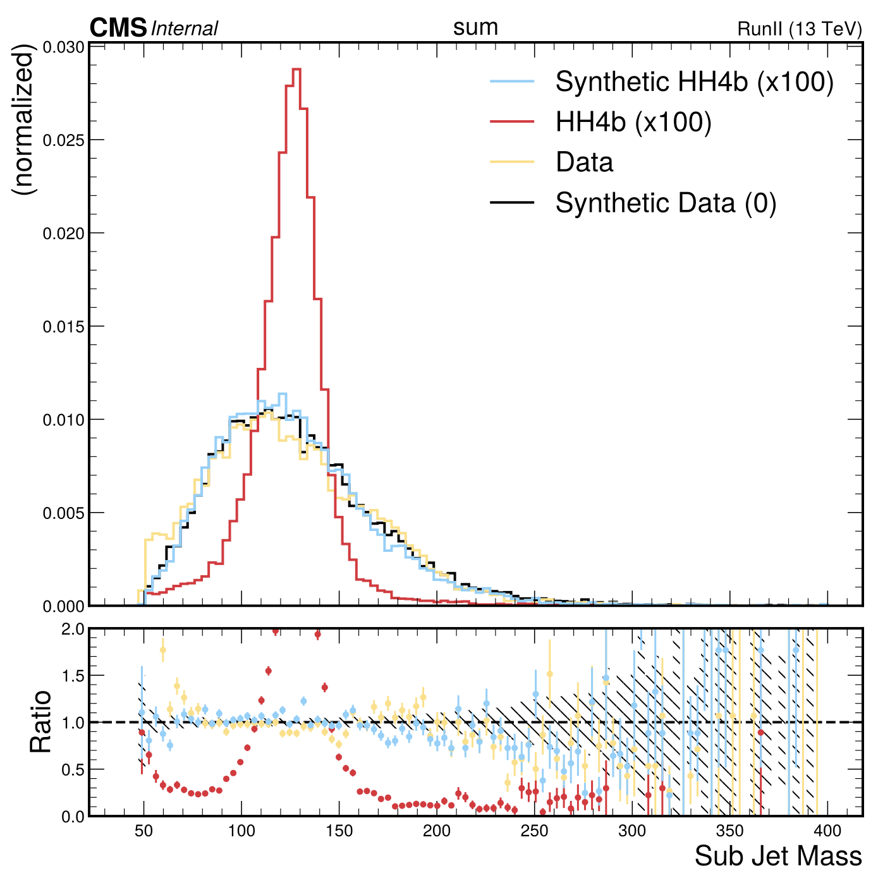
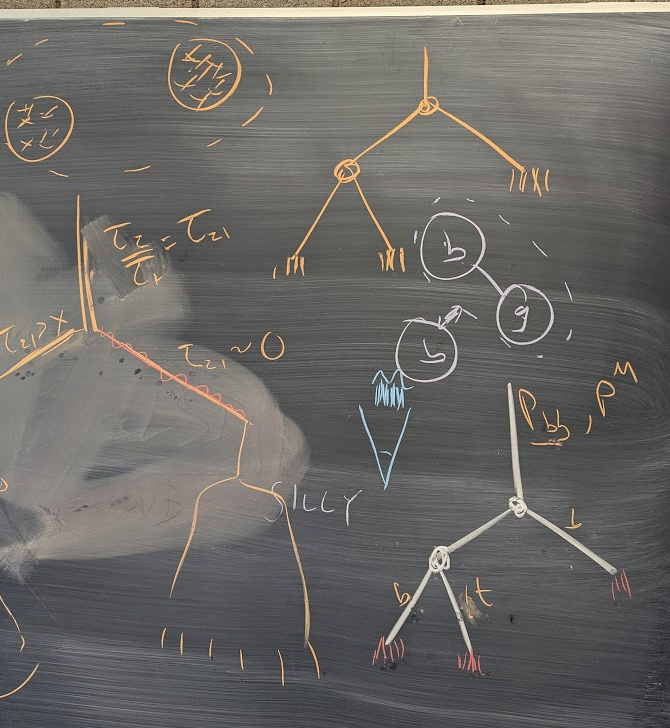
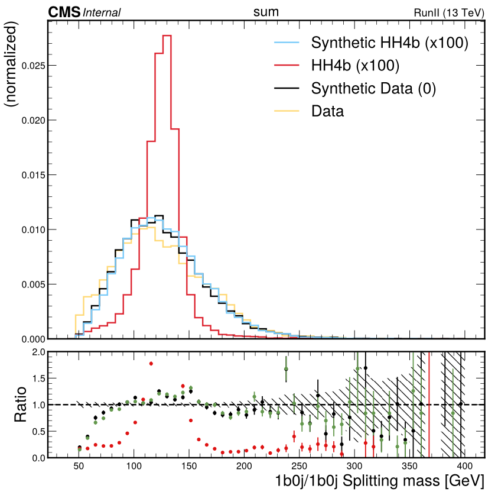
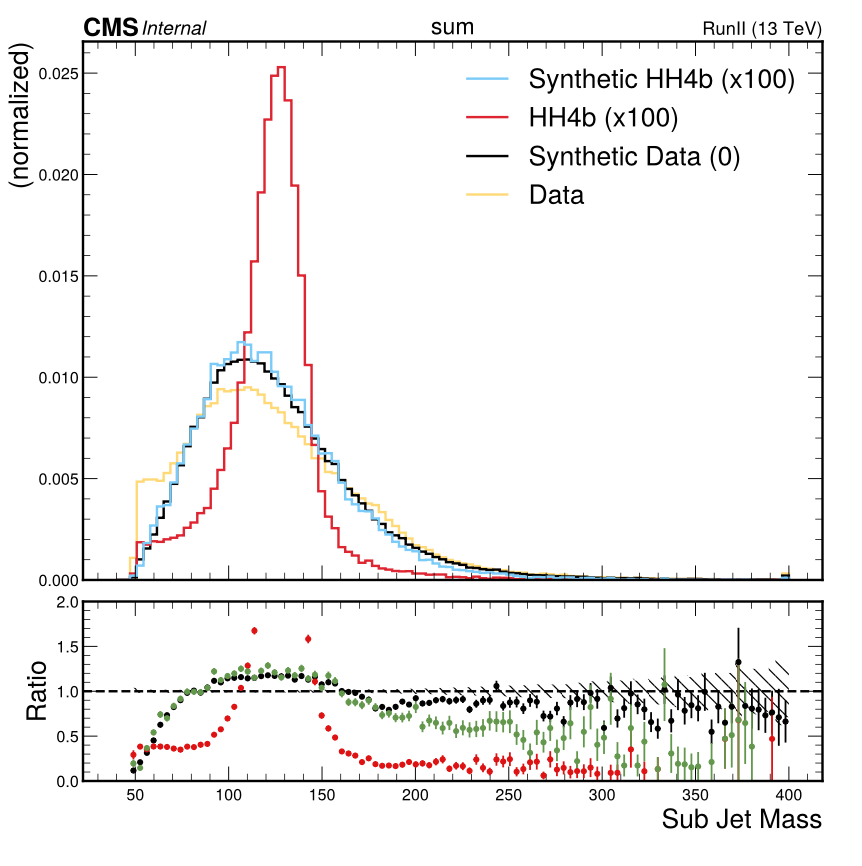

Boosted Synthetic Data
PFNano
Mail Re: PFNano samples for Run3
Planning
- Start with softdrop mass
- Verified Can recover the soft-drop mass from the leading two subjets.
- Now do Jet(De)Clustering based on the sub-jets
[ ]show can recover the data[ ]Smear out the signal[ ]Present in Hbb
- Setup for running on mini
- Start with Run2 signal
- skim nano
[X]Start with four-vectors to Chance… Can talk to TonyBoyle about setup[X]Can we recover soft-drop mass from leading two subjets ?
- script to plot mass in coffea code
Looks like the Boosted Synthetic Data is actually going to be harder than I thought
- Need to reclacluate mregressed mass
- Need to recalculate PNet scores
- First try it with m-soft drop… Let Chance do it.
Log
07 October 2025 Tuesday
- Migrating to barista
git clone ssh://git@gitlab.cern.ch:7999/cms-cmu/barista.gitcd baristagit clone ssh://git@gitlab.cern.ch:7999/cms-cmu/coffea4bees.git - Checkout BoostedSynthetic Branch
- Merged with master
./run_container python runner.py -p coffea4bees/analysis/processors/processor_synthetic_boosted_PFcands.py -m coffea4bees/metadata/datasets_HH4b_2024_v2_boosted.yml -y 2022_EE -d data -c coffea4bees/analysis/metadata/HH4b_Run3_PFNano.yml -t -op coffea4bees/output -o test_PFCands.coffea - Fixed…
- Pushed PR fails
./run_container python runner.py -o test_synthetic_data.coffea -d data synthetic_data synthetic_GluGluToHHTo4B_cHHH1 GluGluToHHTo4B_cHHH1 -p coffea4bees/analysis/processors/processor_synthetic_boosted.py -y UL18 -op output -m coffea4bees/metadata/datasets_HH4b_2024_v2_boosted.yml
29 August 2025 Friday
- Need to update coffea4b code on falcon
- Merged with head.
- Now running from coffea4bs folder
./run_container python runner.py -p python/analysis/processors/processor_synthetic_boosted_PFcands.py -m python/metadata/datasets_HH4b_2024_v2_boosted.yml -y 2022_EE -d data -c python/analysis/metadata/HH4b_Run3_PFNano.yml -t - Minor changes… pushed
- Testing subjets
./run_container python runner.py -o test_synthetic_data.coffea -d data synthetic_data synthetic_GluGluToHHTo4B_cHHH1 GluGluToHHTo4B_cHHH1 -p python/analysis/processors/processor_synthetic_boosted.py -y UL18 -op output -m python/metadata/datasets_HH4b_2024_v2_boosted.yml - Tried plotting all the pf cands… Similar error… pinged CL
- CL repushed… Working now
- Adding pf cand hists
- pushed… Mailed Lei
07 August 2025 Thursday
- Figured out how to add PFCands to subjets…
- Now can't plot them… Need to ping CL
- Indeed looks like I need to ak.flatten
06 August 2025 Wednesday
- Working through subjet histograms
- Got it working… sent mail to Chance
- Updating PFCand processor
- Playing with PFCands… sent mail to Lei
05 August 2025 Tuesday
Results with the new synthetic dataset

- Pushed changes
[X]Adding some hists[X]Send mails- Trying to add hists…I think I need to copy WCandHists…
yes this turns out to be what I need
31 July 2025 Thursday
- Cleaning up code
[X]Update the deClusterer- Remaking the pdfs for all three splitting types
- Fixes to the deClusterer to allow some types of combined jets to be ignored.
Need that in the boosted case because I am not declustering
(bj)jets - Remaking the synthetic data
30 July 2025 Wednesday
- Updating synthetic dataset splitting based on tau21
- tau21 is small declare b+j
- Adding seprate splitting for bj (meaning low tau21 and b)
- Have to get sorting right.. Done
- Making new pdfs
./run_container python jet_clustering/make_jet_splitting_PDFs.py output/test_synthetic_data_HH4b.coffea --years UL18 --out jet_clustering/jet-splitting-PDFs-boosted-00-03-00 --doBoosted- Will need to update the declustering code to not split
(bj)when doing the boosted
29 July 2025 Tuesday
- Think what I want to do is preserve the graph such that elements that get deClustered are pseudojets with no-substructure (tau21 ~ 1).
- The synthetic data would then undo the splitting at the nodes, preserveing pT and direction of the combined jet (ala resolved)
- The underlying PF candidates would just "go along for the ride" with the fourvectors modified to match the synthetic pseudojet (eta and phi shifted and pt scaled)

- Need to think if this is really worth the trouble… Probably yes for Lei
- Think I really want to do this in C++ on miniAOD…or should we try on python first?
[X]clean code: try ak.zip (ala helpers/canditatesselection.py[X]plot properties of the subjets- Try to cluster sub-jets based on a cut on tau21
28 July 2025 Monday
- Looking into PFCandidates
./run_container python runner.py -p analysis/processors/processor_synthetic_boosted_PFcands.py -m metadata/datasets_HH4b_2024_v2_boosted.yml -y 2022_EE -d data -c analysis/metadata/HH4b_Run3_PFNano.yml -t
- Getting the PFCands and starting to plot them
- Starting to add PFCand plots
- Not clear how to do synthetic data… probably dont want to use PFCands…subjets from kt clustering?
- Need to think about about how to decluster "PFCands"
- Probably want to preserve the sub-jet topology
25 July 2025 Friday
- Add Xbb cut on fatjet 2?
- Adding plots of Xbb… Not cutting on Xbb
- Adding a cut on Xbb for both jets.
- Will remake pdfs.
./run_container python jet_clustering/make_jet_splitting_PDFs.py output/test_synthetic_data_HH4b.coffea --years UL18 --out jet_clustering/jet-splitting-PDFs-boosted-00-02-00 --doBoosted- Making synthetic data

- Try 40 GeV mass cut on the declustering ?
- Did the declustering at 40 GeV.. qualitatively the same
18 July 2025 Friday
- Check soft-drop parameters (ptB/ pt? ).
- Trying … Seems OK
17 July 2025 Thursday
- Adding midMass selection
- Chat AE re:subjets
[X]mA vs mB plots: DONE: indeed there are big correlations between the subjet masses[X]nConstituents ? No, but we do have tauX variables- Two types of subjets (high and low mass)
- Looked into tau21, there are lot of tau21 ~ 0 events in the low mass region.
- Probably best to just cut at 50 GeV
- Added 50 GeV mass cut
- Make pdfs:
./run_container python jet_clustering/make_jet_splitting_PDFs.py output/test_synthetic_data.coffea --years UL18 --out jet_clustering/jet-splitting-PDFs-boosted-00-01-00 --doBoosted
- Updated
make_declustered_data_boosted_4b.pyto cut on the combined subjet pts and the subjet masses - Making new synthetic data… done
- Running data and HH4b
./run_container python runner.py -o test_synthetic_data.coffea -d data synthetic_data synthetic_GluGluToHHTo4B_cHHH1 GluGluToHHTo4B_cHHH1 -p analysis/processors/processor_synthetic_boosted.py -y UL18 -op output -m metadata/datasets_HH4b_2024_v2_boosted.yml - Looks much better!

- Still not perfect .. Maybe a threshold effect ?
- Will try to relax the mass
14 July 2025 Monday
- zA less than 0.5 for data
- Move sorting for making synthetic data
- Think the problem could be that fatJet four-vector is not the sum of the sub-jet fourvectors….
- Setting the splitting pt fourvector to be just the sum of the two subjets
- Making new input pdfs
./run_container python jet_clustering/make_jet_splitting_PDFs.py output/test_synthetic_data.coffea --years UL18 --out jet_clustering/jet-splitting-PDFs-boosted-00-00-05 --doBoosted - Update
make_declustered_data_boosted_4bto use the sum of the subjet fourvectors - Remaking synthetic data
- pts look better. Seeing weird overflows… Should check if its from the nans…
- Adding pt-cut on the combined subjet fourvector
- Maybe need rhoB vs theta ?
- Check subjet masses if sub-jets are massless
10 July 2025 Thursday
- Making PDFs with more thetaA bins: updated binnings
jet-splitting-PDFs-boosted-00-00-02./run_container python jet_clustering/make_jet_splitting_PDFs.py output/test_synthetic_data.coffea --years UL18 --out jet_clustering/jet-splitting-PDFs-boosted-00-00-02 --doBoosted
- Re-Making the synthetic data
- thetaA now much better… But the masses is qualitatively unchanged.
- Going to try to fix ptB now… adding more bins to rhoA and rhoB
jet-splitting-PDFs-boosted-00-00-03- related to sorting ?
- Problems with subjet pt ordering after declustering..
- Doing a pt sort on the subjets before clustering
- Trying with more pt bins 3->6…
jet_clustering/jet-splitting-PDFs-boosted-00-00-04 - Re-made the synthetic data
- Now seeing the zA templates look wierd in data. Should not have values below 0.5 …?
This was b/c I was using fatJet pt, not sum-subjet Pts
09 July 2025 Wednesday
- Think my problem is the resolution on thetaA??
... turns out it wasnt.
08 July 2025 Tuesday
- Getting the ranges working on 2d histograms
- Adding low mass selection
07 July 2025 Monday
- Need to fix sub-jet <—> fat-jet matching
[X]Add dR check to spot mismatches- dR checks in data OK
- Synthetic data has many mismatches
- Now ordering output synthetic subjets by subJetIdx0 and 1
- Test seems to fix problem.
- Remaking all synthetic data
- Much closer
Found 113 bad matches in 60127 events - Residual errors from
nans - Making 2d Raitios !!!
- Need to look at more 2d pltos
- Is it a problem with the 1st theta bin ?
26 June 2025 Thursday
- Mades pdf with
zA_l_mA_l_mB_l - Remaking synthetic data with new pdfs
[X]Why am I seeing splitting fractions with zA = 0 in the synthetic data?- A: subjets are matched to the wrong fat jet
[ ]Fix subjet matching[ ]Use dR check to spot problems[ ]Implement solution
25 June 2025 Wednesday
- Can run on signal
./run_container python runner.py -o test_synthetic_signal.coffea -d GluGluToHHTo4B_cHHH1 synthetic_GluGluToHHTo4B_cHHH1 -p analysis/processors/processor_synthetic_boosted.py -y UL18 -op output -m metadata/datasets_HH4b_2024_v2_boosted.yml - Added soft drop mass and subjet mass plots
- plot with
python -i plots/iPlot.py SyntheticBoostedTests/test_synthetic_signal.coffea -m plots/metadata/plotsSyntheticBoosted.yml
got the synthetic data running

- Looks like the pt-threshold is too high in the synthetic jets… I actually think its the delta R cut.
- Remove the dr cut, now looks like:

- Need to use zAl not zA for sampling pdf
24 June 2025 Tuesday
- Back to understanding data vs synthetic data differences…
- Looks like I had most of the synthetic datasets commented out…INDEED!! fixed
- Mail to Chance and Lei
- Signal failing with
./run_container python runner.py -o test_signal_nano.coffea -d GluGluToHHTo4B_cHHH1 -p analysis/processors/processor_synthetic_boosted.py -y UL18 -op output -m metadata/datasets_HH4b.yml -c analysis/metadata/HH4b_nano.yml - Was cutting on the lumimask in MC… killing all the events
- Now have the declustering running on signal
- Running all events
- Strange errors during merging from boosted taus… resolved by removing boosted taus in
python/skimmer/metadata/declustering_boosted.yml - Making plots
23 June 2025 Monday
- Synthetic dataset fails …
- Remaking with new nSubJets cuts
- Running
./run_container python runner.py -o test_synthetic_data.coffea -d synthetic_data -p analysis/processors/processor_synthetic_boosted.py -y UL18 -e A -op output -m metadata/datasets_HH4b_2024_v2_boosted.ymlStill see errors! - Data OK
- Did not update the skimmer processor with the new cut… trying agian…
- Test job fails…
- Problem when more than four subjets in the orignal data, but the selected jets point to not the first 4…
- Removed by hand for now
- Big difference in event yields between data and synthetic data.
python -i plots/iPlot.py SyntheticBoostedTests/test_synthetic_data.coffea -m plots/metadata/plotsSyntheticVsData2.yml - Adding cutflow
20 June 2025 Friday
- Ordered subjets based on fat jet index
- Made synthetic data for the whole dataset:
./run_container source scripts/synthetic-dataset-make-dataset-boosted-all.sh- Need to update to master to get container to mount the scratch directory
- Merged with origin master
- Running synthetic data
./run_container python runner.py -o test_synthetic_data.coffea -d synthetic_data -p analysis/processors/processor_synthetic_boosted.py -y UL18 -e A -op output -m metadata/datasets_HH4b_2024_v2_boosted.yml - Found "Nones" really coming from fat jets with only one subjet Added the proper cut on nSubjets == 2
- Update
make_jet_splitting_PDFs.pyto run on boosed and nominal - For boosted run with
./run_container python jet_clustering/make_jet_splitting_PDFs.py output/test_data.coffea --years UL18 --out jet_clustering/jet-splitting-PDFs-boosted-00-00-01-test --doBoosted
18 June 2025 Wednesday
- Debugging …
- Problem from size of the float
<class 'numpy.float32'>vs<class 'numpy.float64'>= - Fixed…More problems… Seem to all be fixed…
- Updating Subjets… Adding fatjet index as btag score
- Need to sort on btag ID
17 June 2025 Tuesday
- Moving to splitting name
1b0j/1b0j - Setting up the Boosted Synthetic data creation
[ ]skipcollections ?[ ]skipbranches ?./run_container source scripts/synthetic-dataset-make-dataset-boosted.sh- Checking root file with:
./run_container combine root output/synthetic_dataset_make_dataset/data_UL18A/picoAOD_seed5.root
13 June 2025 Friday
- Chat Chance and Lei
- Chance Fixed problem of the failed boosts
./run_container python jet_clustering/make_jet_splitting_PDFs.py output/test_data.coffea --years Run2 --out jet_clustering/jet-splitting-PDFs-boosted-00-00-01
06 June 2025 Friday
- Getting the processor running on data
./run_container python runner.py -t -o test_data_nano.coffea -d data -p analysis/processors/processor_synthetic_boosted.py -y UL18 -op output -m metadata/datasets_HH4b_2024_v2_boosted.yml - Almost there…
29 May 2025 Thursday
- Trying to get my grid certificate to work on rogue
From AE Just run:
voms-proxy-init --valid 168:00and it should work.Then I test opening a file like this and it worked:
./run_container combine root -lroot://cmseos.fnal.gov//eos/uscms//store/mc/RunIISummer20UL18NanoAODv9/GluGluToHHTo4B_cHHH1_TuneCP5_PSWeights_13TeV-powheg-pythia8/NANOAODSIM/106X_upgrade2018_realistic_v16_L1v1-v1/2810000/EE3712DC-9DAB-694E-A446-0B43C5590D58.root
- Running
./run_container python runner.py -o test_signal_nano.coffea -d GluGluToHHTo4B_cHHH1 -p analysis/processors/processor_synthetic_boosted.py -y UL18 -op output -m metadata/datasets_HH4b.yml -c analysis/metadata/HH4b_nano.yml - Chance can run locally with:
./run_container python runner.py -o test_signal_nano.coffea -d GluGluToHHTo4B_cHHH1 -p analysis/processors/processor_synthetic_boosted.py -y UL18 -op output -m metadata/datasets_HH4b_2024_v2_boosted.yml - Got it going…
28 May 2025 Wednesday
- Zoom call with Chance Lavoie
- Ran boosted test command on rogue01
./run_container python runner.py -p analysis/processors/processor_synthetic_boosted.py -m metadata/datasets_HH4b_2024_v2_boosted.yml -d data -y UL18 -op output/ -o test.coffea - Added better histogramming
- Tried to add subJets…
- Debugging subjets on LPC with:
python runner.py -o signal_BoostedHH4b_nano.coffea -d GluGluToHHTo4B_cHHH1 -p analysis/processors/processor_boosted_HH4b.py -y UL18 -op output/analysis_test_job -m metadata/datasets_HH4b.yml -c analysis/metadata/HH4b_nano.yml - Subjets are missing in new skims …
- AE to make new inputs
9 March 2025 Sunday
- Running UL18A on condor … cmslpc317
python runner.py -o data_boosted_nano.coffea -d data -p analysis/processors/processor_boosted_HH4b.py -y UL18 -e A -op output/analysis_test_job -m metadata/datasets_HH4b.yml -c analysis/metadata/HH4b_nano.yml --condor - … Fails… Trying era C
- Runs
- Sub-Jet masses reconstruct the soft-jet masses well also in data!
- [>>] Skim data (no Trigger)
8 March 2025 Saturday
- Lots more progress…. Trying data
- cmslpc314..
- Running on data… Looks like triggers are not applied
python runner.py -o data_boosted_nano.coffea -d data -p analysis/processors/processor_boosted_HH4b.py -y UL18 -op output/analysis_test_job -m metadata/datasets_HH4b.yml -c analysis/metadata/HH4b_nano.yml
6 March 2025 Thursday
- filter boosted fourvectors
- Nanos failing on rucio… Nano not avilible on LPC, needed to add MIT
- NanoAOD content https://cms-nanoaod-integration.web.cern.ch/autoDoc/
- Testing with
python runner.py -t -o signal_HH4b_nano.coffea -d GluGluToHHTo4B_cHHH1 -p analysis/processors/processor_boosted_HH4b.py -y UL18 -op output/analysis_test_job -m metadata/datasets_HH4b.yml -c analysis/metadata/HH4b_nano.yml
- Added function to write boosted output
- Running on all UL18
python runner.py -o signal_BoostedHH4b_nano.coffea -d GluGluToHHTo4B_cHHH1 -p analysis/processors/processor_boosted_HH4b.py -y UL18 -op output/analysis_test_job -m metadata/datasets_HH4b.yml -c analysis/metadata/HH4b_nano.yml
- Example script for reading the output
python analysis/readBoostedSyntheticEvents.py output/analysis_test_job/signal_BoostedHH4b_nano.coffea
- Sent mail to Chance
N-subjettiness
τ1,τ2,τ3,τ4: These variables measure how well a jet can be described by 1, 2, 3, or 4 subjets, respectively. Lower values indicate a better fit to the corresponding number of subjets.
- τ21= frac{τ2}{τ1} Measures how much more the jet looks like a 2-prong structure compared to a 1-prong structure.
- τ32=\frac{\tau_3}{\tau_2} Measures how much more the jet resembles a 3-prong structure compared to a 2-prong structure.
Interpretation:
- 2-prong jets (e.g., boosted W/Z bosons or Higgs to bb) usually have:
- *Low τ21τ21τ21*: because adding a second subjet significantly improves the description.
- *High τ32τ32τ32*: since a third subjet adds little benefit.
- 3-prong jets (e.g., boosted top quarks) generally show:
- *Low τ32τ32τ32*: because adding a third subjet significantly improves jet description.
- Moderate-to-higher τ21τ21τ21, since going from one subjet to two subjets is helpful, but the clearer signal is at three subjets.
Instructions for Rogue
Here are the instructions to run the processor for the boosted synthetic datasets:
Setting Up Your Analysis Environment
Here's a step-by-step guide to setting up your analysis environment on our computing cluster:
Cluster Account Setup:
You'll need an account on our computing cluster. Follow the instructions here to create one: https://cms-cmu.docs.cern.ch/computing/computing/
Cluster Login:
Once you have an account, log in to the cluster. If you haven't modified your SSH configuration file (.ssh/config) as suggested in the website, use one of the following commands in your terminal:
ssh -XY <your_username>@falcon.phys.cmu.edu
ssh -XY <your_username>@rogue01
Replace <yourusername> with your actual username on the cluster. The -XY flags enable X11 forwarding, which might be needed for certain applications.
Repository Cloning:
Create a work directory to store your analysis files:
mkdir work
cd work
Clone the coffea4bees repository from GitHub:
git clone https://github.com/alefisico/coffea4bees.git
Navigate to the python directory within the cloned repository:
cd coffea4bees/python/
Software Overview:
coffea: We use coffea (version 0.7.23) for data analysis. Refer to the documentation for this specific version: https://coffea-hep.readthedocs.io/en/v0.7.23/. Important: Do not use the latest coffea version's documentation.
coffea4bees: This repository provides the necessary tools and scripts for your analysis. Key components include:
runner.py: The main script (located in the python/ directory) for running your analysis "processors".
processorsyntheticboosted.py: A template processor (in python/analysis/processors/) that you'll modify to define your specific analysis. This is where you'll specify what data you want to analyze and what calculations to perform.
datasetsHH4b2024v2boosted.yml: This file (in python/metadata/) contains information about the data files you'll be working with. You'll primarily be using the "data" dataset, specifically for the "UL18" year. (The dataset is further divided into "eras," but this is not essential for your immediate work. We can discuss eras later if needed.)
runcontainer: A script in the python/ directory that runs your analysis within a pre-configured container. This container includes coffea and other required software, ensuring a consistent environment. Always use this script to execute your analysis.
Running Your Analysis:
Execute your analysis using the runcontainer script from the python/ directory:
./runcontainer python runner.py -p analysis/processors/processorsyntheticboosted.py -m metadata/datasetsHH4b2024v2boosted.yml -d data -y UL18 -op output/ -o test.coffea
Command Breakdown:
./runcontainer: Executes the container script.
python runner.py: Runs the runner.py script within the container.
-p analysis/processors/processorsyntheticboosted.py: Specifies the path to your processor script.
-m metadata/datasetsHH4b2024v2boosted.yml: Specifies the metadata file.
-d data: Selects the "data" dataset.
-y UL18: Specifies the "UL18" data-taking year.
-op output/: Sets the output directory to output/. This directory will be created if it doesn't exist.
-o test.coffea: Names the output file test.coffea.
Output Location:
The results of your analysis will be saved in a file named test.coffea within the output/ directory.
Let me know if you have any questions cheers,
1st Mail
Hi Chance
You can find that data here: https://cernbox.cern.ch/s/n9ZGaTYl8jVtL9g
The file is for HH->4b signal and has the following variables:
- 'event'
- 'run'
- 'FatJet*'
- 'SubJet*'
(We can talk about this more in person when you have time…) Each event has two "FatJets", you can think of these as the reconstructed Higgs bosons. Each FatJet has a four-vector (pt, eta, phi, mass) and a bunch of other variables. Each FatJet has two "SubJets". The SubJets also have four-vectors and a bunch of other variables.
I would start by playing around with the data. An example of how to load the file in python is here: https://cernbox.cern.ch/s/ucAc3Nr2ZaA78wU You will need to install coffea (and will probably also want numpy and akward) in your python environment.
(Tony Boyle, another undergrad working with me has done this and can help if needed… ChatGPT also knows things…)
A good first exercise is to compare the mass of the FatJets to the mass computed from the constituent SubJet four-vectors. These should be fairly close, though probably not exact. You will want to be able to make plots (histograms) of the masses.
Make sense?
Let me know if you have any problems accessing the files and what is a good time to meet to chat about this in more detail.
john